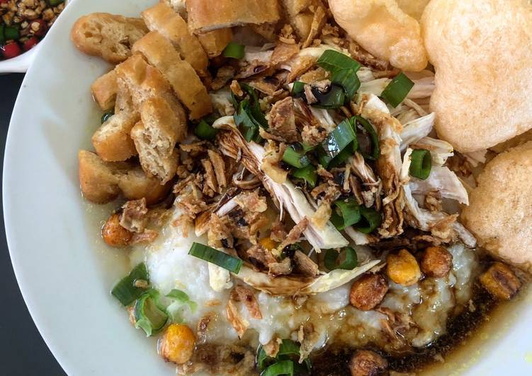
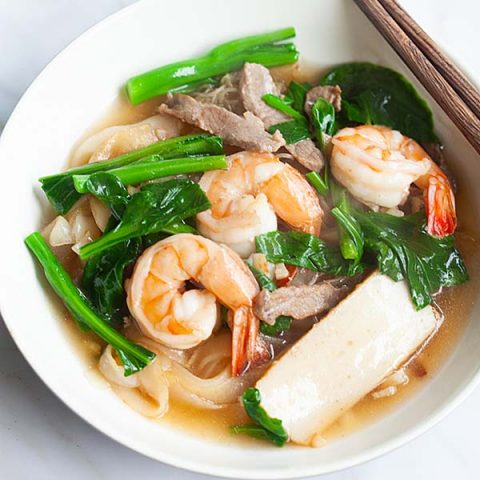

Breakfast: Bubur Ayam
Indonesians have a saying: All Rice, All Day. This common breakfast is a thick rice porridge with shredded chicken, scallions, shallots, cilantro, crushed peanuts, and boiled eggs. The dish has a generous dose of soy sauce, seame oil, or fish sauce.
Recipe
Ingredients
- 1 cup of rice
- pair of chicken breasts
- 4 cups of chicken stock or water
- 2 Indonesian daun salam (Indonesian bay leaves)
- 1 lemongrass
- 80 grams of shallots
- 4 cloves of garlic
- 4 toasted candlenuts or toasted macademia nuts
- 1/2 teaspoon ground tumeric
- prawn crackers (optional)
- peanut chili sauce
Instructions
- Wash and drain rice, then place in a pot along with daun salam, chicken stock, and salt. Bring to a boil, then lower to a simmer, cover, and cook until tender and thickened into a congee consistency.
- Heat 2 tablespoon of oil in a soup pot over medium high heat. Sauté spice paste, lemongrass, kaffir lime leaves, daun salam, and galangal until fragrant.
- Add chicken breast and cook until both sides are no longer pink. Then add chicken stock, salt, ground pepper, and sugar. Bring to a boil.
- Reduce heat to a simmer, cover the pot, and cook for about 20-30 minutes, or until the chicken is infused with the spiced broth.
- Remove the cooked chicken breasts from the broth and set aside until quite dry. Strain the broth to serve along the congee.
- Once the strained chicken breasts are quite dry, heat a bit of oil in a frying pan over medium heat, and fry until both sides are golden brown.
- Shred the fried chicken breast into thin pieces with a pair of forks (or hands but make sure they are cooled enough to handle!).
- Ladle congee into serving bowls, and serve along the strained chicken broth, the shredded fried chicken, and the assorted accompaniments.

Lunch: Penang Char Hor Fun
From a little island in Malaysia, this dish is soaked in gravy with thick, rice noodles and prawns. It is a favorite dish often sold in hawker centers.
Recipe
Ingredients
- 1/2 pack hor fun/flat rice noodles
- 1/2 pack vermicelli
- 12 shrimps
- 12 pieces pork meat
- 12 thin pieces of fish cake
- 3 cloves garlic
- 3 tablespoons oil
- 1/2 tablespoon soy sauce
- 2 dashes white pepper powder
- 2 tablespoons corn flour
Instructions
- Soak the vermicelli in warm water for 15 minutes or until soft. Drain the water and set aside.
- Break the flat rice noodles off by peeling the layers. Set aside.
- Heat up a wok and add 1 1/2 tablespoon of cooking oil. Toss in the vermicelli and do a quick stir.
- Add 1/2 tablespoon of soy souce and 1/2 tablespoon of kecap manis and continue to stir the vermicelli until the soy sauce and kecap manis are well blended with the vermicelli. Dish up and set aside.
- Repeat the same for the flat rice noodles. Dish up and set aside.
- Add some oil in a wok and stir-fry the minced garlic until fragrant.
- Add in the pork, shrimp, bay scallops, fish cake and do a quick stir.
- Add the chicken broth and 1 1/4 cup of water immediately.
- Add in all the seasoning and bring it to boil. Add in the starch mixture to thicken the gravy. Add in the mustard green, do a quick stir and turn off the heat.
- On a plate, place the fried vermicelli and flat rice noodles equally. Pour the gravy and toppings on the noodles and vermicelli. Serve hot.

Dinner: Coconut Shrimp Curry
An easy Thai curry made with coconut milk that is a favorite, comfort food.
Recipe
Ingredients
- 18 medium-sized shrimps
- 2 tbsp white onions chopped into cubes
- 2 cloves garlic finely chopped
- 1/4 cup water
- 1/2 coconut milk
- 1 1/2 tbsp unsalted butter
- 1 tbsp fish sauce
- 3 1/2 tbsp Thai red curry paste
- 3 kaffir lime leaves
- 1/2 tsp sugar
- 1 1/2 tbsp lime juice
Instructions
- Heat 1/2 tbsp of butter in a pan over medium high heat.
- Season the shrimp with salt and pepper and cook over medium high heat for about 30 seconds on each side until thoroughly cooked. Remove from heat and set aside.
- Melt the rest of the butter on pan over medium high heat. Cook the onions and garlic until soft and fragrant, about 2 minutes.
- Add the Thai red curry paste and mix well. Add in the water, coconut milk, sugar and kaffir lime leaves. Stir well until well combined. Add the fish sauce and mix well.
- Let sauce cook over medium to medium high heat until it boils and thickens. Remove from heat and season with salt and pepper.
- Add the cooked shrimps into the sauce and stir well until all the shrimps are coated with the sauce.
- Squeeze about 1 1/2 tablespoon of lime juice and mix well. Garnish with coriander leaves and serve with white rice.